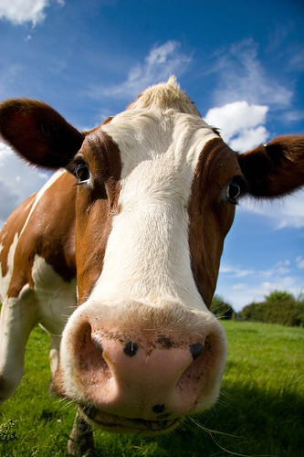
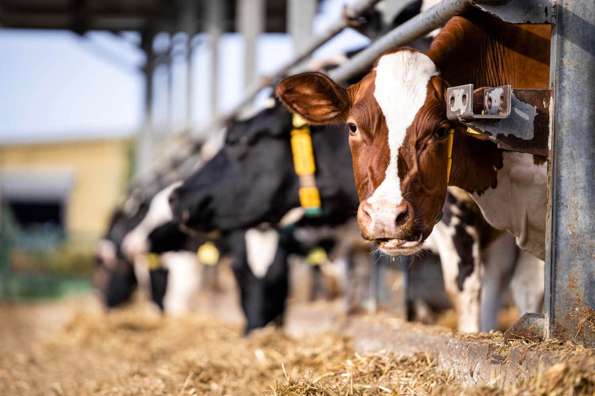
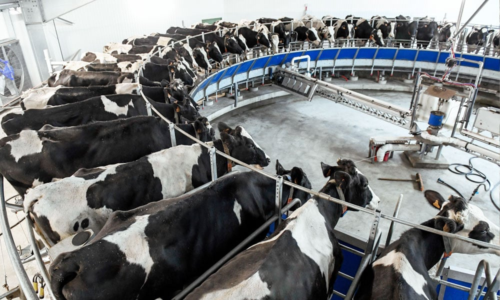
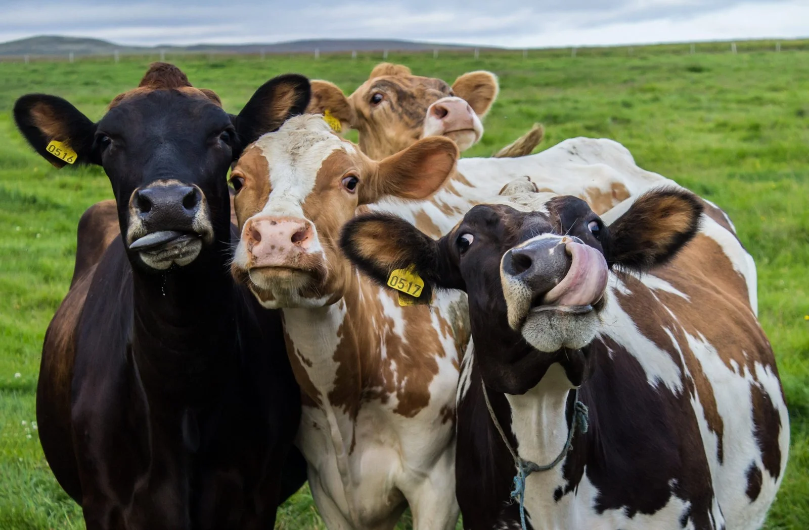

Tecnologia na produção leiteira:
A tecnologia na produção de leite envolve o uso de equipamentos e sistemas modernos para aumentar a eficiência e o bem-estar animal. Entre as inovações estão ordenhadeiras automatizadas, sensores para monitorar a saúde e produtividade das vacas, e softwares de gestão leiteira. A nutrição é otimizada com rações balanceadas e suplementação precisa. O uso de genética avançada melhora a produção e resistência dos animais. Essas tecnologias reduzem custos, aumentam a qualidade do leite e promovem uma pecuária mais sustentável.
Galeria



